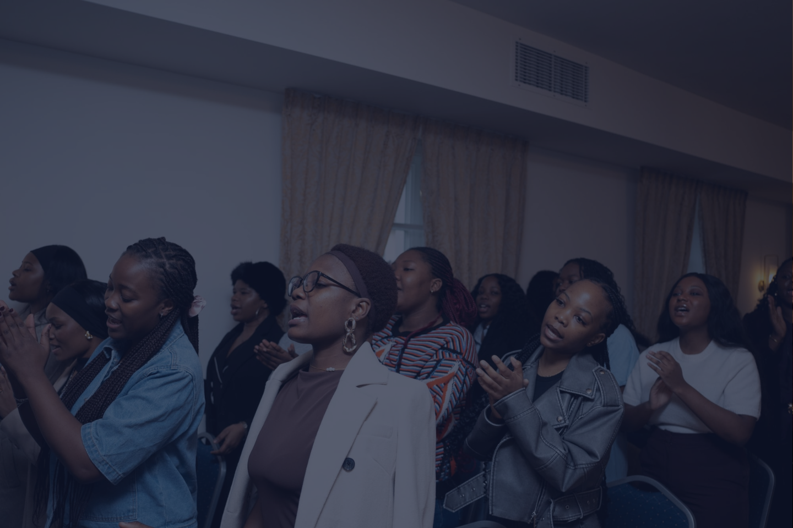

Advancing the Gospel of Jesus Christ — from Warsaw to the Nations.

AFM Warsaw Assembly — Warsaw Christian Centre is a dynamic, Spirit-filled congregation that is part of the Apostolic Faith Mission (AFM) — one of Africa's oldest and most impactful Pentecostal movements, now bearing fruit in the heart of Europe.
Established in Warsaw, Poland, our assembly brings together people from diverse backgrounds, nationalities, and walks of life — united by one common faith: Jesus Christ is Lord. We are a community of believers who are passionate about worship, anchored in the Word, and mobilised for missions.
We exist to glorify God, grow His Kingdom, and guide people into a life of meaning, purpose, and eternal salvation through the gospel of Jesus Christ.
To be a vibrant, Spirit-filled church that impacts Warsaw, Poland, and the nations — a church that reaches the lost, disciples believers, and transforms communities through the power of the Holy Spirit and the truth of God's Word.
To preach the gospel, make disciples of all nations, equip believers for works of service, and plant churches — all for the glory of God and the extension of His Kingdom in Poland and beyond.
"Welcome, beloved, to AFM Warsaw Assembly."
Senior Pastor — AFM Warsaw Assembly | Warsaw Christian Centre